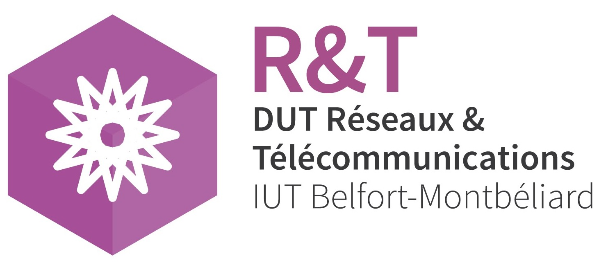
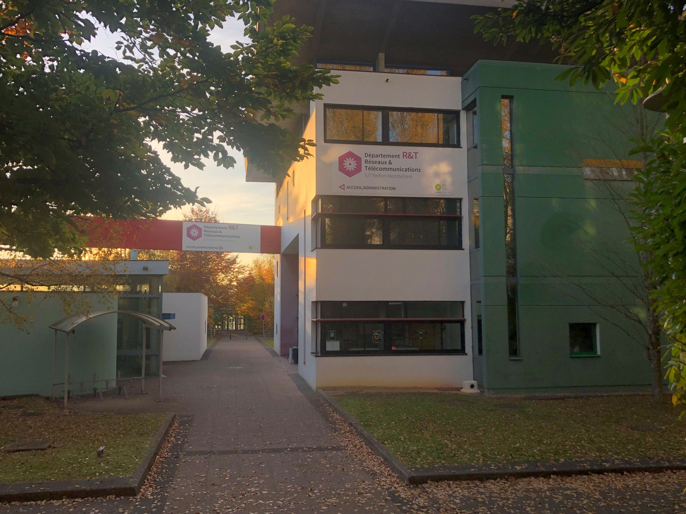

Mon cursus scolaire est le suivant :
J’ai étudié au collège Jean Moulin de Rouffach où j'ai obtenu mon brevet avec une mention très bien.
Puis, j’ai postulé au lycée Camille Sée de Colmar pour faire une seconde générale en filière sport étude avec pour objectif de devenir professeur d’EPS.
Lors de mon entrée en première, j’ai choisi les enseignements de spécialités SVT, Mathématiques et Physique-Chimie.
En terminale, j’ai changé de lycée suite aux nombreuses grèves de la SNCF et au contexte sanitaire.
J’ai fait ma rentrée en terminale au Lycée agricole de Rouffach tout en conservant l’option EPS. J’ai décidé de maintenir les spécialités Biologie, Physique-Chime et l'option Mathématiques.
J’ai acquis mon bac avec la mention assez bien et j’ai choisi de continuer mes études dans le domaine de l’informatique en filière BUT Réseaux et Télécommunications à Montbéliard.

Logo de l'IUT Réseaux et Télécommunications de Montbéliard

Photo de l'IUT Réseaux et Télécommunications de Montbéliard